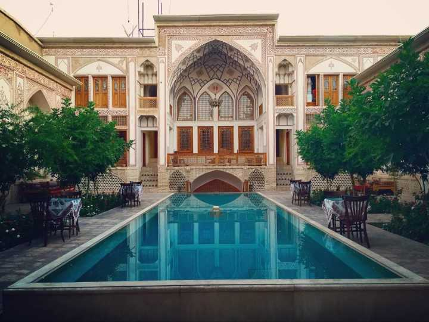
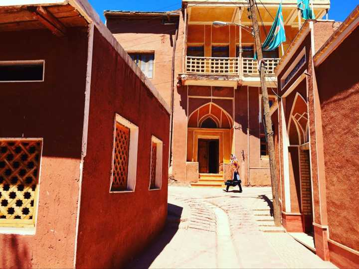
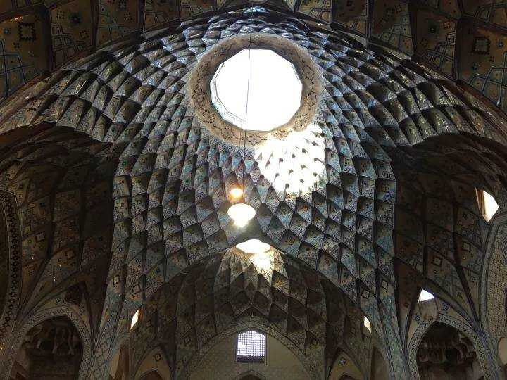

Bergün
1500年历史，波斯在伊斯兰化之前所建立的村庄，卡尚。伊朗的国花是玫瑰，而卡尚正是被称为玫瑰之城，从德黑兰开车南下约三个小时车程，就能够达到这一座水草丰美的绿洲城市。
红色基调的建筑，与浅灰土黄的沙漠民居截然不同。 村民的传统服饰极其绚丽花哨，但是成年女子还是要把身体包裹严实。 村里有一座风格独特的尖顶清真寺，两棵葡萄树遮天蔽日。 最难得的是虽然被列为国家重点保护的历史文化遗产，但是商业化基本还没有侵蚀到这个区域
 在波斯帝国最繁盛的阿契米尼德朝代，卡尚曾经民殷财阜，是当时最重要的财富中心；到了萨法维王朝，国王曾在此建立行宫，是皇亲国戚的后花园；游客现在看到的很多建筑，其实大都多一两百年前进行过修缮加固过。历史的天空，风云际会，卡尚不复当年地位，但是却古色古香，更多了一些文艺气息。